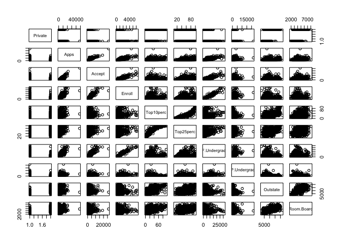
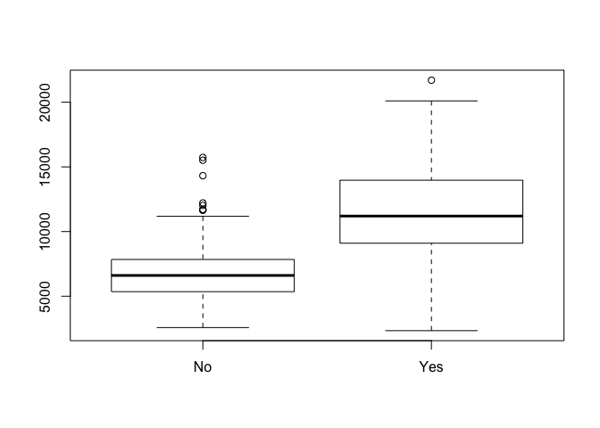
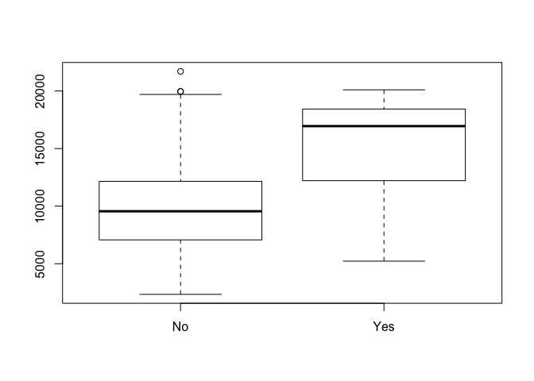
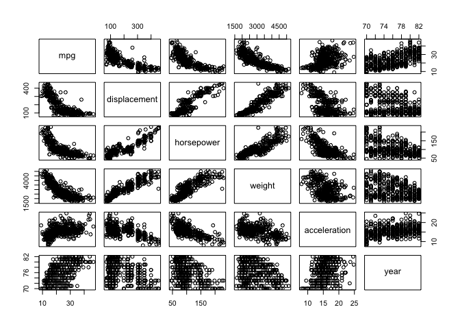
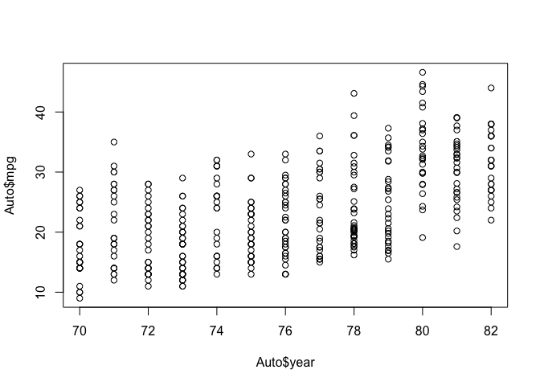
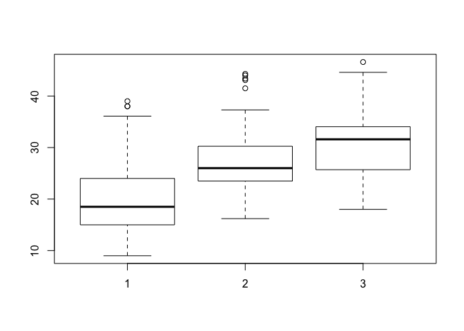
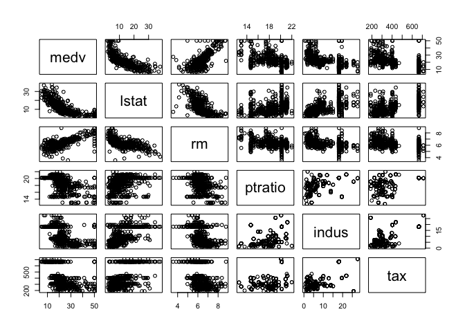
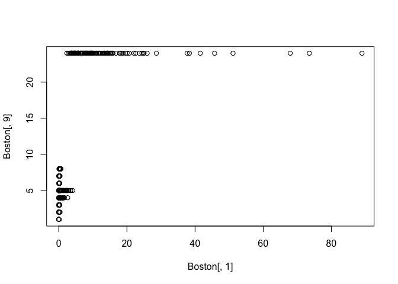

- Introduction
- 1. Chapter 2. Statistical Learning
- 2. Chapter 3. Linear Regression
- 3. Chapter 4. Classification
- 4. Chapter 5. Resampling Methods
- 5. Chapter 6. Linear Model Selection and Regularization
- 6. Chapter 7. Moving Beyond Linearity
- 7. Chapter 8. Tree-Based Methods
- 8. Chapter 9. Support Vector Machines
- 9. Chapter 10. Unsupervised Learning
- 10. References
- Published with GitBook
2.4 Exercises
Exercise 8
college <- read.csv("http://www-bcf.usc.edu/~gareth/ISL/College.csv")
rownames(college) <- college[, 1]
college <- college[, -1]
head(college)
## Private Apps Accept Enroll Top10perc
## Abilene Christian University Yes 1660 1232 721 23
## Adelphi University Yes 2186 1924 512 16
## Adrian College Yes 1428 1097 336 22
## Agnes Scott College Yes 417 349 137 60
## Alaska Pacific University Yes 193 146 55 16
## Albertson College Yes 587 479 158 38
## Top25perc F.Undergrad P.Undergrad Outstate
## Abilene Christian University 52 2885 537 7440
## Adelphi University 29 2683 1227 12280
## Adrian College 50 1036 99 11250
## Agnes Scott College 89 510 63 12960
## Alaska Pacific University 44 249 869 7560
## Albertson College 62 678 41 13500
## Room.Board Books Personal PhD Terminal
## Abilene Christian University 3300 450 2200 70 78
## Adelphi University 6450 750 1500 29 30
## Adrian College 3750 400 1165 53 66
## Agnes Scott College 5450 450 875 92 97
## Alaska Pacific University 4120 800 1500 76 72
## Albertson College 3335 500 675 67 73
## S.F.Ratio perc.alumni Expend Grad.Rate
## Abilene Christian University 18.1 12 7041 60
## Adelphi University 12.2 16 10527 56
## Adrian College 12.9 30 8735 54
## Agnes Scott College 7.7 37 19016 59
## Alaska Pacific University 11.9 2 10922 15
## Albertson College 9.4 11 9727 55
summary(college)
## Private Apps Accept Enroll Top10perc
## No :212 Min. : 81 Min. : 72 Min. : 35 Min. : 1.00
## Yes:565 1st Qu.: 776 1st Qu.: 604 1st Qu.: 242 1st Qu.:15.00
## Median : 1558 Median : 1110 Median : 434 Median :23.00
## Mean : 3002 Mean : 2019 Mean : 780 Mean :27.56
## 3rd Qu.: 3624 3rd Qu.: 2424 3rd Qu.: 902 3rd Qu.:35.00
## Max. :48094 Max. :26330 Max. :6392 Max. :96.00
## Top25perc F.Undergrad P.Undergrad Outstate
## Min. : 9.0 Min. : 139 Min. : 1.0 Min. : 2340
## 1st Qu.: 41.0 1st Qu.: 992 1st Qu.: 95.0 1st Qu.: 7320
## Median : 54.0 Median : 1707 Median : 353.0 Median : 9990
## Mean : 55.8 Mean : 3700 Mean : 855.3 Mean :10441
## 3rd Qu.: 69.0 3rd Qu.: 4005 3rd Qu.: 967.0 3rd Qu.:12925
## Max. :100.0 Max. :31643 Max. :21836.0 Max. :21700
## Room.Board Books Personal PhD
## Min. :1780 Min. : 96.0 Min. : 250 Min. : 8.00
## 1st Qu.:3597 1st Qu.: 470.0 1st Qu.: 850 1st Qu.: 62.00
## Median :4200 Median : 500.0 Median :1200 Median : 75.00
## Mean :4358 Mean : 549.4 Mean :1341 Mean : 72.66
## 3rd Qu.:5050 3rd Qu.: 600.0 3rd Qu.:1700 3rd Qu.: 85.00
## Max. :8124 Max. :2340.0 Max. :6800 Max. :103.00
## Terminal S.F.Ratio perc.alumni Expend
## Min. : 24.0 Min. : 2.50 Min. : 0.00 Min. : 3186
## 1st Qu.: 71.0 1st Qu.:11.50 1st Qu.:13.00 1st Qu.: 6751
## Median : 82.0 Median :13.60 Median :21.00 Median : 8377
## Mean : 79.7 Mean :14.09 Mean :22.74 Mean : 9660
## 3rd Qu.: 92.0 3rd Qu.:16.50 3rd Qu.:31.00 3rd Qu.:10830
## Max. :100.0 Max. :39.80 Max. :64.00 Max. :56233
## Grad.Rate
## Min. : 10.00
## 1st Qu.: 53.00
## Median : 65.00
## Mean : 65.46
## 3rd Qu.: 78.00
## Max. :118.00
pairs(college[, 1:10])

# plot side by side boxplots of Outstate versus Private (Private universities have more out of state students):
plot(college$Private, college$Outstate)

Elite <- rep("No", nrow(college))
Elite[college$Top10perc > 50] <- "Yes"
Elite <- as.factor(Elite)
college <- data.frame(college, Elite)
summary(Elite)
## No Yes
## 699 78
# plot side by side boxplots of Outstate versus Elite (Elite universities have more out of state students):
plot(college$Elite, college$Outstate)

# Part vi (Some interesting observations):
college[which.max(college$Top10perc), ] # what is the university with the most students in the top 10% of class
## Private Apps Accept Enroll Top10perc
## Massachusetts Institute of Technology Yes 6411 2140 1078 96
## Top25perc F.Undergrad P.Undergrad
## Massachusetts Institute of Technology 99 4481 28
## Outstate Room.Board Books Personal
## Massachusetts Institute of Technology 20100 5975 725 1600
## PhD Terminal S.F.Ratio perc.alumni
## Massachusetts Institute of Technology 99 99 10.1 35
## Expend Grad.Rate Elite
## Massachusetts Institute of Technology 33541 94 Yes
acceptance_rate <- college$Accept/college$Apps
college[which.min(acceptance_rate), ] # what university has the smallest acceptance rate
## Private Apps Accept Enroll Top10perc Top25perc
## Princeton University Yes 13218 2042 1153 90 98
## F.Undergrad P.Undergrad Outstate Room.Board Books
## Princeton University 4540 146 19900 5910 675
## Personal PhD Terminal S.F.Ratio perc.alumni Expend
## Princeton University 1575 91 96 8.4 54 28320
## Grad.Rate Elite
## Princeton University 99 Yes
college[which.max(acceptance_rate), ] # what university has the most liberal acceptance rate
## Private Apps Accept Enroll Top10perc Top25perc
## Emporia State University No 1256 1256 853 43 79
## F.Undergrad P.Undergrad Outstate Room.Board Books
## Emporia State University 3957 588 5401 3144 450
## Personal PhD Terminal S.F.Ratio perc.alumni
## Emporia State University 1888 72 75 19.3 4
## Expend Grad.Rate Elite
## Emporia State University 5527 50 No
Exercise 9
Auto <- read.csv("http://www-bcf.usc.edu/~gareth/ISL/Auto.csv", header = T, na.strings = "?")
Auto <- na.omit(Auto)
summary(Auto)
## mpg cylinders displacement horsepower
## Min. : 9.00 Min. :3.000 Min. : 68.0 Min. : 46.0
## 1st Qu.:17.00 1st Qu.:4.000 1st Qu.:105.0 1st Qu.: 75.0
## Median :22.75 Median :4.000 Median :151.0 Median : 93.5
## Mean :23.45 Mean :5.472 Mean :194.4 Mean :104.5
## 3rd Qu.:29.00 3rd Qu.:8.000 3rd Qu.:275.8 3rd Qu.:126.0
## Max. :46.60 Max. :8.000 Max. :455.0 Max. :230.0
##
## weight acceleration year origin
## Min. :1613 Min. : 8.00 Min. :70.00 Min. :1.000
## 1st Qu.:2225 1st Qu.:13.78 1st Qu.:73.00 1st Qu.:1.000
## Median :2804 Median :15.50 Median :76.00 Median :1.000
## Mean :2978 Mean :15.54 Mean :75.98 Mean :1.577
## 3rd Qu.:3615 3rd Qu.:17.02 3rd Qu.:79.00 3rd Qu.:2.000
## Max. :5140 Max. :24.80 Max. :82.00 Max. :3.000
##
## name
## amc matador : 5
## ford pinto : 5
## toyota corolla : 5
## amc gremlin : 4
## amc hornet : 4
## chevrolet chevette: 4
## (Other) :365
qualitative_columns <- c(2, 8, 9)
sapply(Auto[, -qualitative_columns], range)
## mpg displacement horsepower weight acceleration year
## [1,] 9.0 68 46 1613 8.0 70
## [2,] 46.6 455 230 5140 24.8 82
sapply(Auto[, -qualitative_columns], mean)
## mpg displacement horsepower weight acceleration
## 23.44592 194.41199 104.46939 2977.58418 15.54133
## year
## 75.97959
sapply(Auto[, -qualitative_columns], sd)
## mpg displacement horsepower weight acceleration
## 7.805007 104.644004 38.491160 849.402560 2.758864
## year
## 3.683737
# Part (d):
sapply(Auto[-seq(10, 85), -qualitative_columns], mean)
## mpg displacement horsepower weight acceleration
## 24.40443 187.24051 100.72152 2935.97152 15.72690
## year
## 77.14557
pairs(Auto[, -qualitative_columns])

plot(Auto$year, Auto$mpg)

# dev.off()
# Lets plot some mpg vs. some of our qualitative features:
plot(as.factor(Auto$cylinders), Auto$mpg)

plot(as.factor(Auto$origin), Auto$mpg)

Exercise 10
library(MASS)
all_correlations <- cor(Boston)
print(all_correlations[, 14])
## crim zn indus chas nox rm
## -0.3883046 0.3604453 -0.4837252 0.1752602 -0.4273208 0.6953599
## age dis rad tax ptratio black
## -0.3769546 0.2499287 -0.3816262 -0.4685359 -0.5077867 0.3334608
## lstat medv
## -0.7376627 1.0000000
cols <- c(14, 13, 6, 11, 3, 10)
pairs(Boston[, cols])

# dev.off()
# Look how the variable most correlated to crim (turns out to be rad)
plot(Boston[, 1], Boston[, 9])
